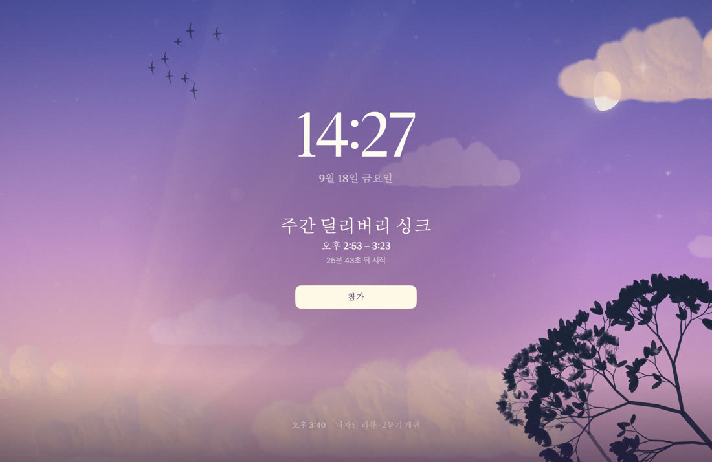

의도된 선택
Apple 공증을 받지 않았습니다
개발자 프로그램(연 $99)에 가입하지 않고 만들었고, 아는 사람에게만 나눠주는 앱이라 가입하지 않았습니다. 대신 서명은 확실히 합니다 — 고정된 self-signed 인증서라 업데이트해도 캘린더 권한을 다시 주지 않아도 됩니다. ad-hoc 서명이었다면 재빌드마다 권한이 초기화됩니다. 그건 실측으로 확인했습니다.
표본 001 · UNTILLITY 0.3.0 · macOS 15.2 이상
다른 앱이 전체 화면이든, 다른 Space에 있든 그 위에 뜹니다. 닫기 전에는 안 사라집니다. 소리는 1회 — 화면을 안 보고 있을 때를 위한 나머지 절반입니다.
아직 배포 링크가 없습니다. Apple 공증을 받지 않은 앱이라 설치에 5분 걸리고, 한 번만 하면 됩니다. 경고 창의 기본 버튼이 「휴지통으로 이동」이라 취급 절차를 보면서 하세요.
판 00 — 알림 화면 · 엠버 · ahead · 1920 × 1080 pt · 연결된 디스플레이마다 한 장
판 01 — 분해도 / EXPLODED VIEW
알림 화면은 하늘 위에 장면을 얹고, 그 위에 매 프레임 계산되는 먼지를 얹고, 마지막에 글자 뒤 주머니를 깔아 만듭니다. 표본에 마우스를 올리면 그 열한 겹이 뒤로 물러납니다.
판 사이의 간격은 보기 좋으라고 벌린 것이 아닙니다. 앱이 실제로 쓰는 depth 값 그대로입니다 — 0.12부터 1.00까지. 간격이 고르지 않은데, 그게 맞습니다.

합쳐진 상태. 아래 목록의 depth 값이 이 한 장 안에서 층이 놓인 순서입니다.
#17141C → #291C21 세로 선형
화면 아래 60%. 빛이 아래에서 옵니다
불꽃색으로 0.55 민 #CB6E3A. 3.4초마다 흔들립니다
반경 ×{1.0, 0.55, 0.26}. 반경 하나로는 눈부심이 안 됩니다
37.3초에 한 번 떠다닙니다
±0.025 rad 를 19초에
1.6화면 높이를 92초에 오릅니다
88초 / 50초 / 34초. 먼 것부터 느립니다
먼지 320 · 별 14. 이 판만 매 프레임 다시 계산됩니다
#09080B α0.60. 글자 뒤에만 깔립니다
이 판만 급합니다
각주 — 포인터를 따라 기우는 것도 흉내가 아닙니다. 앱은 구운 배경과 살아 있는 층을 같은 카메라로 보고, 층마다 camera × (0.15 + 0.85 × depth) 만큼 밉니다. 두 층을 따로 움직이면 즉시 깨집니다. 이 페이지는 같은 식을 씁니다.
판 02 — 대조 표본 / 실물 크기
화면 구석에 잠깐 떴다 사라지고, Slack 알림·메일 알림과 같은 자리에 같은 모양으로 나옵니다. 무언가에 집중해 있으면 안 보이고, 봤어도 5초 뒤엔 사라져 있습니다.
언틸리티는 반대로 갑니다.
배너 크기는 macOS 기본값 기준의 근사치입니다. 두 사각형의 비율은 실제 비율이고, 큰 쪽은 이 페이지 밖으로 나갑니다. 실제로는 연결된 디스플레이마다 한 장씩 뜹니다.
판 03 — 표본 세 점
배경은 두 층입니다. 구워 둔 그림 위에 매 프레임 시뮬레이션되는 살아 있는 층이 얹히고, 둘은 같은 카메라를 봅니다. 마우스를 움직이면 층이 시차로 갈라지고, 먼지가 바람에 밀려났다 되돌아옵니다.
001-A
화로 앞. 열기 아지랑이가 세로 결로 피어오르고 그 사이로 불씨가 떠올라 위쪽에서 식어 사라집니다.
001-B

발광 성운. 청록 공동과 그것을 감싸는 금빛 먼지 벽. 팔레트에서 보라를 전부 뺐습니다.
001-C

저녁 하늘. 해는 수평선 아래라 원반 없이 광채만, 구름은 밑면이 노을에 물듭니다. 가끔 새 무리가 글자 위를 지나갑니다.
남은 시간에 따라 광원의 색이 바뀝니다 — 여유, 임박, 이미 시작됨. 색이 곧 정보입니다.
전환은 0.7초, 레이어 구조는 그대로 두고 그라디언트 색만 갈아입습니다.
각주 — 구름 명암 대비를 세게 뒀더니 구름이 아니라 바위 절벽으로 읽혔습니다. 절반으로 낮췄습니다. 흰 글자가 청록 위에 오면 대비가 1.4:1 이라, 아스트라의 공동은 글자 컬럼 바깥 오른쪽으로 옮겼습니다.
판 04 — 검색표 / 제외 조건
취소된 일정, 종일 일정, 내가 거절한 일정, 4시간 넘는 장시간 일정, 이미 끝난 일정은 기본값으로 안 띄웁니다. “컨퍼런스 월~수” 같은 일정이 앱을 켤 때마다 화면을 덮으면 안 되니까요.
판정은 (이벤트, 설정, 지금) 만 받는 순수 함수 하나가 합니다. 위에서부터 평가하고 하나라도 걸리면 제외합니다. 끝까지 안 걸리면 포함입니다.
그리고 이 표의 행 순서와 코드의 조건 순서가 일치해야 한다고 사양에 적어 뒀습니다. 표가 먼저고 코드가 나중입니다.
같은 회의가 두 캘린더에 있으면 EventKit 은 별개의 이벤트로 돌려줍니다. 실측에서 273건 중 64쌍이 충돌했습니다. 합치지 않으면 같은 회의가 한 화면에 두 줄로 뜹니다.
각주 — 끈 캘린더만 저장합니다. 허용 집합으로 저장하면 회사가 새 캘린더를 붙였을 때 기본이 “꺼짐”이 되어 회의를 조용히 놓칩니다. 저장 방향이 뒤집히면 그게 결함입니다.
판 05 — 표본 둘째
자리를 비울 때 화면을 덮고, 돌아왔을 때 다음 회의가 바로 보입니다. 위아래 방향키나 스크롤로 뒤의 회의를 넘겨 보고, 화면 오른쪽의 점이 지금 몇 번째 칸인지 말합니다. 떠 있는 동안 단축키를 다시 누르면 테마가 바뀌고 그대로 저장됩니다 — 테마는 여기서 고르면 됩니다.
이 화면은 정보 화면이 아니라 보는 화면이라, 조작을 말하는 것들은 평소에 숨어 있다가 마우스를 움직이면 떠오릅니다.


①시계 118pt · light — 가장 큰 것
②회의 자리 216pt 고정 · 위 맞춤
③힌트 줄 — 평소엔 없습니다. 올려 보세요
④다음 회의 — ↑ ↓ 또는 스크롤
판 05 — 대기 화면 · 페이블 · 전체 화면 캡처. ③ 은 실제로 힌트 줄이 떠 있는 두 번째 캡처로 갈아 끼웁니다.
나가는 층 0.12초, 들어오는 층 0.26초. 같은 길이로 두면 겹치는 구간이 길어 글자가 두 겹으로 읽힙니다. 스프링은 stiffness 400 · damping 25 — 더 세게 밀어 봤다가 되돌렸습니다. 느낌은 세게 만들수록 좋아지지 않습니다.
뜨고 사라지는 데 0.2초, 신호가 끊기면 2.5초 뒤 사라집니다. 힌트 줄은 마우스가 움직일 때, 자리 표시 점은 칸을 넘길 때 — 신호가 다릅니다.
상한이 없으면 20건에 297pt, 40건에 442pt 로 의도한 띠를 넘고 셀 수도 없어집니다.
잠금은 아닙니다. 아무나 esc 로 닫을 수 있습니다 — 진짜 잠금은 macOS 의 ⌃⌘Q 입니다.
판 06 — 계측 기록
아래는 전부 실제로 잰 값입니다. 측정 조건과 함께 저장소의 PROGRESS.md 에 남아 있습니다.
| 항목 | 측정값 | 조건 | 비고 |
|---|---|---|---|
| 발화 정확도 | +0.064초 | 무인 4시간 · 17회 측정 | 한도 +2초. 음수 오차 0회 |
| 코어 테스트 | 180개 | UntillityCore @Test |
라인 커버리지 98.38% |
| 오케스트레이터 | 99.21% | AlertEngine 라인 커버리지 | 진짜 결함은 순수 함수가 아니라 여기서 납니다 |
| 참석자 판정 | 53건 | 참석자 있는 이벤트 222건 중 | 내 주소가 목록에 있는데도 isCurrentUser == false |
| 중복 | 64쌍 | 이벤트 273건 중 | 같은 회의가 두 캘린더에 |
| 계정 판정 | 39 / 44 | store.sources 중 |
이벤트 캘린더 0개인 회의실 리소스. 걸러야 계정 3개 |
| 캘린더 변경 감지 | 28초 | 외부에서 만든 6건 | 변경 알림만 믿지 않고 15분마다 다시 엽니다 |
| 실사용 로그 대조 | 0 · 0 · 0 | 1일차 누락 · 오탐 · 중복 | 절전 복귀 4회 포함 |
| 배경 굽기 | 0.35초 | 아스트라 성운 · Release | 백그라운드라 메인 스레드 0ms |
pid 는 예시 숫자입니다. 두 명령의 결과(행 0개)와 CPU·메모리는 실측값입니다.
캘린더를 읽기만 하고, 아무 데도 보내지 않습니다.
분석도, 크래시 리포팅도, 업데이트 체크도 없습니다. 선언이 아니라 측정입니다 — 같은 명령을 직접 돌려 확인할 수 있습니다.
각주 — 샌드박스를 껐기 때문에 엔타이틀먼트는 아무것도 막지 않습니다. 그래서 네트워크 미사용은 코드 규율과 위 두 명령의 실측으로만 담보한다고 사양에 적어 뒀습니다. “엔타이틀먼트로 막아 뒀으니 괜찮다”를 믿지 않으려고요.
판 07 — 관찰 기록
자랑할 것보다 이쪽이 판단에 더 필요합니다. 옆의 라벨은 그 사실이 어디에 기록돼 있는지입니다.
현재 1 / 5
개발자 프로그램(연 $99)에 가입하지 않고 만들었고, 아는 사람에게만 나눠주는 앱이라 가입하지 않았습니다. 대신 서명은 확실히 합니다 — 고정된 self-signed 인증서라 업데이트해도 캘린더 권한을 다시 주지 않아도 됩니다. ad-hoc 서명이었다면 재빌드마다 권한이 초기화됩니다. 그건 실측으로 확인했습니다.
안내 없이 return 을 누르면 앱이 삭제됩니다. 「그래도 열기」 뒤에 뜨는 2차 확인 창에서도 맨 위가 「휴지통으로 이동」입니다. 이건 저희가 고칠 수 있는 것이 아니라서, 설치 안내에 순서를 그림으로 적어 뒀습니다.
LSHasLocalizedDisplayName 과 ko.lproj/InfoPlist.strings 로 두 번 시도해 두 번 실패했습니다. 앱 내부 UI 와 설정 창 제목에는 반영됩니다. 파일명만 그대로입니다.
권한을 받기 전에 만든 EKEventStore 는 그 세션 내내 이벤트 캘린더가 0개입니다. 그런데 권한 상태는 “있음”으로 보이고 15분 주기 재조회도 같은 store 를 읽어 스스로 낫지 않습니다. 지금은 허용을 받아낸 직후 store 를 되돌리고, 로그에 캘린더 개수를 남겨 “회의가 0건”과 “읽지 못한다”를 구분합니다.
켜면 로그가 컨테이너 안으로 숨어 사용자가 못 찾습니다. 로그는 ~/Library/Logs/Untillity/ 에 있어야 “왜 안 떴지”를 직접 볼 수 있습니다. 대가로 엔타이틀먼트가 아무것도 막아 주지 않는다는 것을 판 06에 적어 뒀습니다.
판 08 — 취급 절차
요구 사항을 확인합니다 — macOS 15.2 이상.
Untillity-0.3.0.dmg 를 받습니다. 2.2 MB 입니다.
dmg 를 열고 앱을 응용 프로그램 폴더로 끌어다 놓습니다. dmg 안에서 바로 열지 마세요 — macOS 가 임시 경로에 복사해 실행해서, 로그인 자동 실행이 엉뚱한 경로로 등록됩니다.
취급 주의
응용 프로그램 폴더에서 두 번 눌러 엽니다. 경고가 뜨면 「완료」를 누릅니다.
파란 기본 버튼은 「휴지통으로 이동」입니다. 안내 없이 return 을 누르면 앱이 삭제됩니다.
경고 창 버튼 배열 — 재현 (실제 스크린샷이 아닙니다)
시스템 설정 → 개인정보 보호 및 보안 → 맨 아래 「보안」에서 「그래도 열기」. 이 버튼은 앱을 연 뒤 약 1시간만 보입니다. 확인 창이 한 번 더 뜨는데 거기서도 맨 위가 「휴지통으로 이동」이라, 가운데 「그래도 열기」를 누르고 Touch ID 로 승인합니다.
Dock 에 아무것도 안 뜨는 것이 정상입니다 — 메뉴 막대 전용 앱입니다. 화면 오른쪽 위에서 종 아이콘을 확인하세요. 안 보이면 앱을 한 번 더 실행하면 설정 창이 열립니다.
캘린더 접근을 물으면 「전체 접근 허용」. 읽기만 하고 어디에도 보내지 않습니다.
설정 창에서 「로그인할 때 언틸리티 시작」을 켜두면 끝입니다.